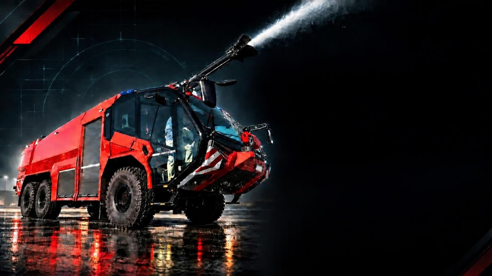
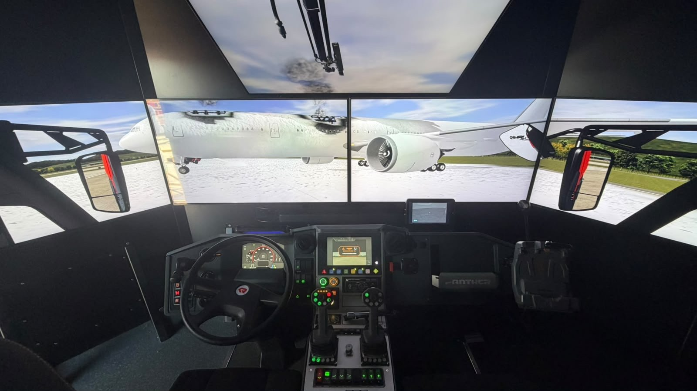
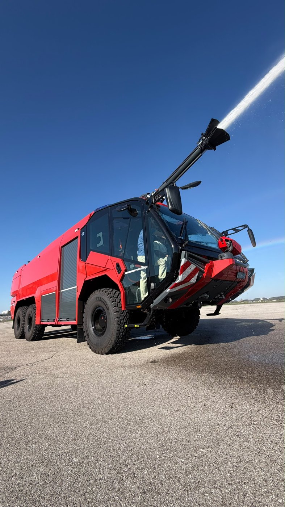
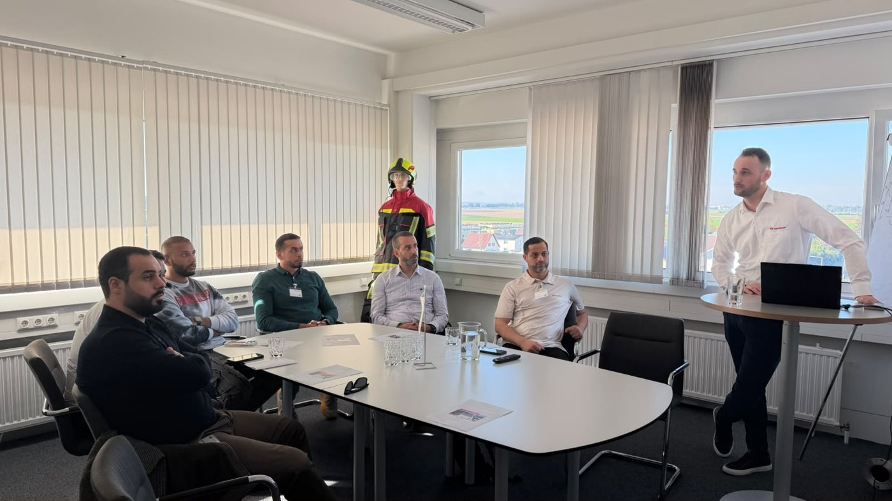
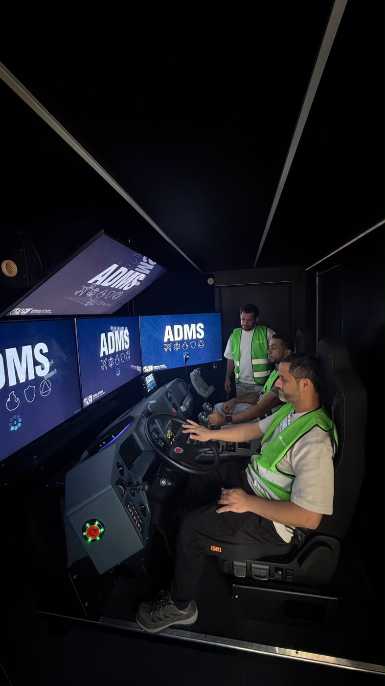
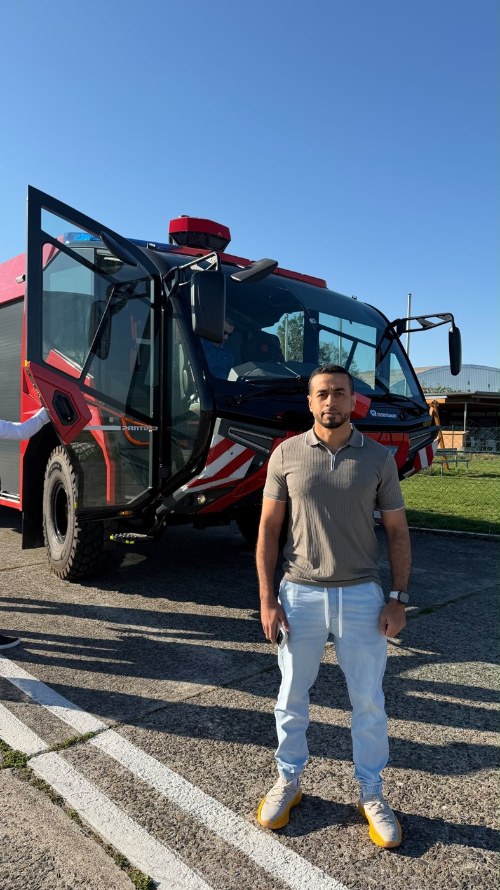

مركبة استجابة للحوادث الخطرة والمتطورة
عرض فني تنفيذي | مواصفات، قدرات تشغيلية، وصور الزيارة الميدانية
ROSENBAUER · PANTHER 6×6 · ARFF
01
ملخص تنفيذي يجمع أهم مواصفات المركبة مع سعات مواد الإطفاء في صفحة واحدة بشكل واضح ومباشر.
6×6
نظام الحركة
≈ 700
حصان — قدرة المحرك
12,500
لتر ماء
1,500
لتر رغوة
سرعة قصوى 115 كم/س
الطاقم: سائق + 4 إطفائيين
بودرة DCP: 250 كجم
PANTHER 6×6 | TECHNICAL BRIEF
02

مقصورة محاكي القيادة — بانثر
02
قدرة حركة عالية مع ناقل أوتوماتيك ومقصورة مهيأة لطاقم الاستجابة الأولية.
منظومة القيادة تعتمد على شركة فولفو مع ناقل حركة أوتوماتيك، وتدعمها شاشة تحكم مركزية لمراقبة وتشغيل معدات الإطفاء مثل قوة دفع المياه، ضغط المياه، خلط الماء بالرغوة، ونظام البودرة DCP.
طاقم المركبة
سائق + 4 إطفائيين — جاهزية تدخل كاملة
PANTHER 6×6 | TECHNICAL BRIEF
قيم الأداء مشروطة بتهيئة المركبة والحمولة · 03
03
تدفق عالٍ ومدى رمي مناسب للتعامل مع حوادث المواد الخطرة والحوادث المتطورة.
مدى القاذفين — هجوم علوي وأمامي
30 م
القاذف الأول (السفلي): مدى يصل إلى 30 متر
70-90 م
القاذف الثاني (العلوي): مدى يقارب 70-90 متر حسب الضغط والإعداد
PANTHER 6×6 | TECHNICAL BRIEF
معدل التدفق يتأثر بإعداد المضخة والضغط وخطوط التصريف · 04

04
توزيع أبرز أنظمة المركبة مع الأبعاد الرئيسية لتسهيل القراءة الفنية.
11.5 م
الطول
3 م
العرض
4 م
الارتفاع
الأنظمة الرئيسية للمركبة
1
المراقب العلوي
2
مقصورة الطاقم
3
الخزانات
4
حجرة المضخة
5
المحرك والحركة
PANTHER 6×6 | TECHNICAL BRIEF
الأبعاد الرئيسية: الطول 11.5 م | العرض 3 م | الارتفاع 4 م · 05
ROSENBAUER
أداء عالٍ ومدى كبير لمكافحة حرائق الطائرات في ساحات المطارات، مع منظومة متكاملة للضخ والقاذفات والتقنيات الحديثة.
الأبعاد
الطول: 11.5 متر | العرض: 3 متر | الارتفاع: 4 متر
المحرك
شركة Volvo — جير أوتوماتيكي (Automatic)
القاذفات
القاذف الأول: مدى يصل إلى 30 متر
القاذف الثاني: مدى يصل إلى 70-90 متر
المقصورة
مقصورة متقدمة ومريحة للطاقم مجهزة بأحدث أنظمة التحكم والمراقبة
الاستخدام
مكافحة حرائق الطائرات والمواد الخطرة في ساحات المطارات
مخصصة للاستجابة للحوادث المتطورة وحوادث المواد الخطرة، ودعم عمليات التدخل السريع والسيطرة على المخاطر المتصاعدة.
05
تُستخدم المركبة للتعامل مع الحوادث المتطورة وحوادث المواد الخطرة.

تسارع قوي ودفع 6×6 لدعم الحركة السريعة نحو موقع البلاغ.
معدل ضخ مرتفع وسعات كبيرة للماء والرغوة لبدء المكافحة فور الوصول.
ماء ورغوة، مع خيار مسحوق جاف بحسب التهيئة التشغيلية.
الملاءمة النهائية تُحسم عبر تحليل المخاطر، زمن الاستجابة المطلوب، البنية التحتية، التدريب والصيانة.
OPERATIONAL FIT | EVIDENCE-BASED REVIEW
07
FIELD VISIT DOCUMENTATION
يتضمن هذا القسم صورًا من التدريب على المحاكاة، جلسة الشرح الفني، والمعاينة الميدانية المباشرة للمركبة.

تدريب المحاكاة
جلسة الشرح الفني

معاينة ميدانية
PANTHER 6×6 | FIELD VISIT
توثيق الزيارة — التدريب — الشرح — المعاينة الميدانية · 08
FIELD VIDEO
تم وضع الفيديو في شريحة مستقلة لضمان التشغيل بشكل واضح أثناء العرض.
استخدم هذه الشريحة عند الوصول إلى جزء الزيارة الميدانية والتشغيل العملي.
ملاحظة: اضغط على الفيديو مباشرة أثناء العرض لتشغيله.
OPERATIONAL VIDEO | PANTHER 6×6 · 09
FIELD VIDEO
اضغط على أي فيديو أثناء العرض لتشغيله.
تدريب المحاكاة
القيادة الميدانية للمركبة
١ — المحاكاة
التدريب على محاكي القيادة ADMS قبل التشغيل الفعلي
٢ — القيادة
قيادة المركبة ميدانياً على المدرج من داخل المقصورة
OPERATIONAL VIDEO | PANTHER 6×6 · 10
روزنباور بانثر 6×6 — مركبة استجابة للحوادث الخطرة والمتطورة
PANTHER 6×6 | TECHNICAL BRIEF